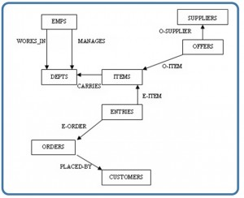
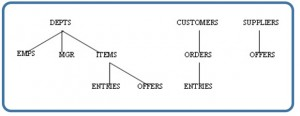

Types of Database Models
أنواع نماذج قواعد البيانات
النص الرئيسي
Key Terms
hierarchical model: represents data as a hierarchical tree structure
instance: a record within a table
network model: represents data as record types
relation: another term for table
relational model: represents data as relations or tables
set type: a limited type of one to many relationship
نماذج البيانات المفاهيمية عالية المستوى
Exercises
What is a data model?
What is a high-level conceptual data model?
What is an entity? An attribute? A relationship?
List and briefly describe the common record-based logical data models.
توفّر نماذج البيانات المفاهيمية عالية المستوى مفاهيم لعرض البيانات بطرق قريبة من الطريقة التي يدرك بها الناس البيانات. ومن الأمثلة النموذجية نموذج الكيانات والعلاقات (entity relationship model)، الذي يستخدم مفاهيم رئيسية مثل الكيانات (entities) والخصائص (attributes) والعلاقات (relationships). ويمثّل الكيان (entity) كائنًا من العالم الحقيقي مثل موظف أو مشروع. ويمتلك الكيان خصائص (attributes) تمثّل صفات مثل اسم الموظف وعنوانه وتاريخ ميلاده. أما العلاقة (relationship) فتمثّل ترابطًا بين الكيانات؛ فعلى سبيل المثال، يعمل موظف على العديد من المشاريع. وهناك علاقة بين الموظف وكل مشروع.
نماذج البيانات المنطقية المعتمدة على السجلات
توفّر نماذج البيانات المنطقية المعتمدة على السجلات (record-based logical data models) مفاهيم يستطيع المستخدمون فهمها، لكنها ليست بعيدة جدًا عن الطريقة التي تُخزَّن بها البيانات في الحاسوب. وهناك ثلاثة نماذج بيانات معروفة جيدًا من هذا النوع، وهي: نماذج البيانات العلائقية، ونماذج البيانات الشبكية، ونماذج البيانات الهرمية.
-
يمثّل النموذج العلائقي (relational model) البيانات في صورة علاقات (relations)، أو جداول (tables). فعلى سبيل المثال، في نظام العضويات في Science World، لكل عضوية أعضاء كثيرون (انظر الشكل 2.2 في الفصل 2). ومعرّف العضوية وتاريخ الانتهاء ومعلومات العنوان حقول (fields) في العضوية. أما الأعضاء فهم أفراد مثل Mickey وMinnie وMighty وDoor وTom وKing وMan وMoose. ويُقال عن كل سجل (record) إنه نسخة (instance) من جدول العضويات.
-
يمثّل النموذج الشبكي (network model) البيانات في صورة أنواع سجلات. كما يمثّل هذا النموذج أيضًا نوعًا محدودًا من علاقة واحد إلى متعدد يُسمَّى نوع المجموعة (set type)، كما هو مبيّن في الشكل 4.1.

- يمثّل النموذج الهرمي (hierarchical model) البيانات في صورة بنية شجرية هرمية. ويمثّل كل فرع من فروع التسلسل الهرمي عددًا من السجلات المترابطة. ويبيّن الشكل 4.2 هذا المخطط (schema) بترميز النموذج الهرمي.

النموذج الهرمي (hierarchical model): يمثّل البيانات في صورة بنية شجرية هرمية
النسخة (instance): سجل داخل جدول
النموذج الشبكي (network model): يمثّل البيانات في صورة أنواع سجلات
العلاقة (relation): مصطلح آخر للجدول
النموذج العلائقي (relational model): يمثّل البيانات في صورة علاقات أو جداول
نوع المجموعة (set type): نوع محدود من علاقة واحد إلى متعدد
- ما هو نموذج البيانات (data model)؟
- ما هو نموذج البيانات المفاهيمي عالي المستوى؟
- ما هو الكيان (entity)؟ وما الخاصية (attribute)؟ وما العلاقة (relationship)؟
- اذكر النماذج المنطقية المعتمدة على السجلات الشائعة وصفها بإيجاز.
نسب العمل
هذا الفصل من كتاب Database Design هو نسخة مشتقة من Database System Concepts من تأليف Nguyen Kim Anh، بترخيص Creative Commons Attribution License 3.0 license
كُتبت المواد التالية من إعداد Adrienne Watt:
- المصطلحات الأساسية
- تمارين